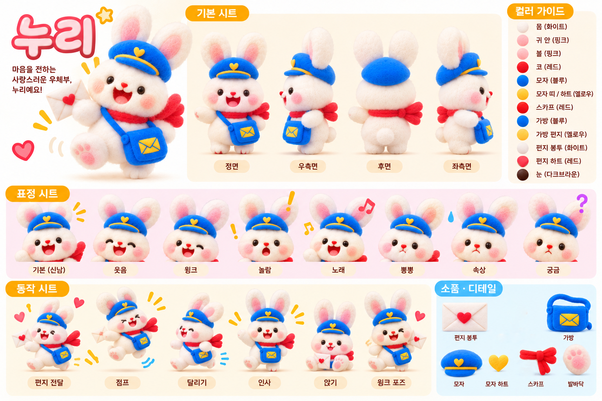
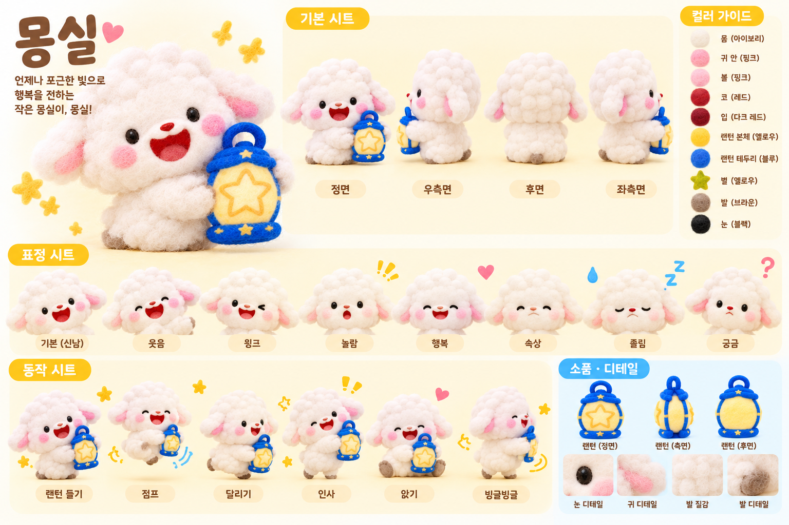
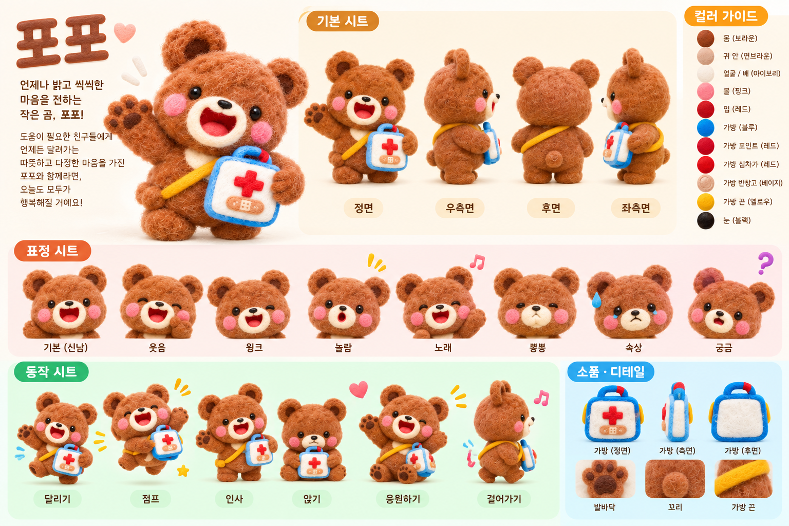
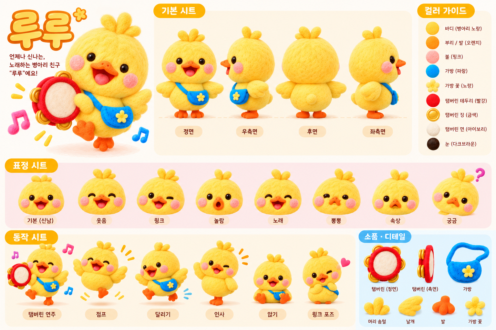
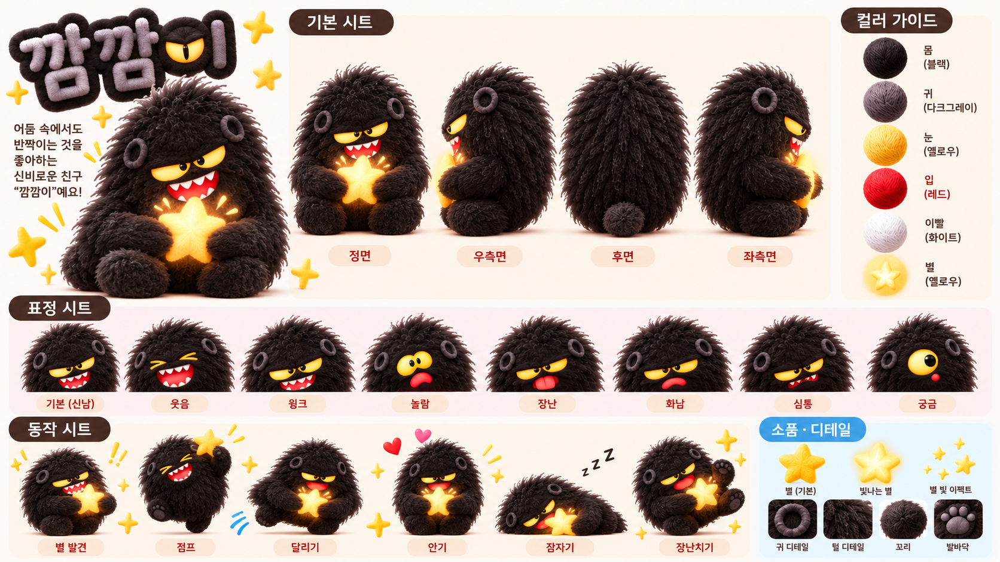
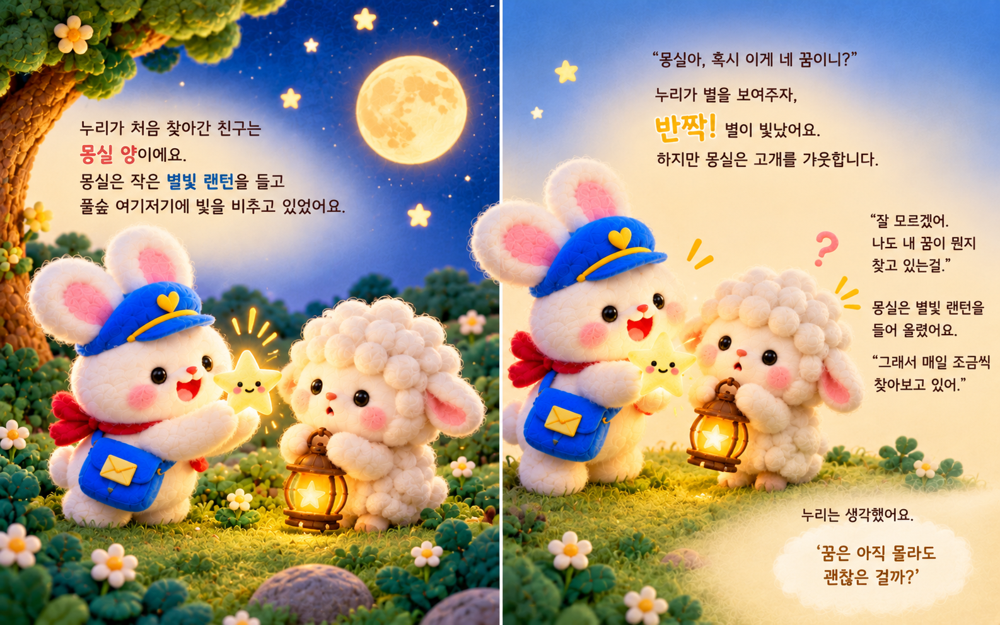

꿈을 배달하는 밤도입 · 01—02
SELECTED WORK 01 / PICTURE BOOK
달빛 아래
꿈 우체국

아직 이름이 없는 꿈도
누군가에게 닿을 수 있을까요?
꿈 우체부 누리는 주인을 알 수 없는 별을 발견합니다. 친구들과 길을 걷고, 깜깜이를 만나며, 저마다 다른 꿈을 찾아가는 이야기를 펼칩니다.
- 형식
- 그림책 · 24쪽
- 제작
- 박성효 · 윤세희
- 구성
- 스토리 장면 · 캐릭터 디자인 시트
01 / STORY
이야기의 장면
도입, 갈등, 해결을 보여주는 세 장면을 골랐습니다.
별을 빼앗긴 순간전환 · 13—14
혼자가 아닌 꿈해결 · 19—20
휴대폰에서는 펼침면을 한 쪽씩 이어서 보여줍니다.
02 / CHARACTERS
캐릭터 디자인
표정, 움직임, 소품과 색을 정리한 캐릭터 시트입니다. 이미지를 누르면 크게 볼 수 있습니다.





03 / FULL BOOK
그림책 전체 보기
첫 장부터 마지막 장까지 순서대로 살펴보세요.
전체 12개 펼침면 열기
